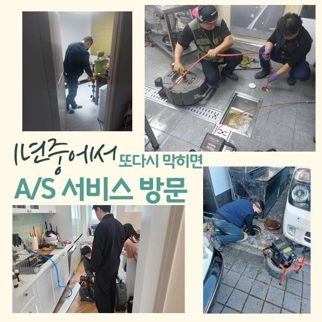
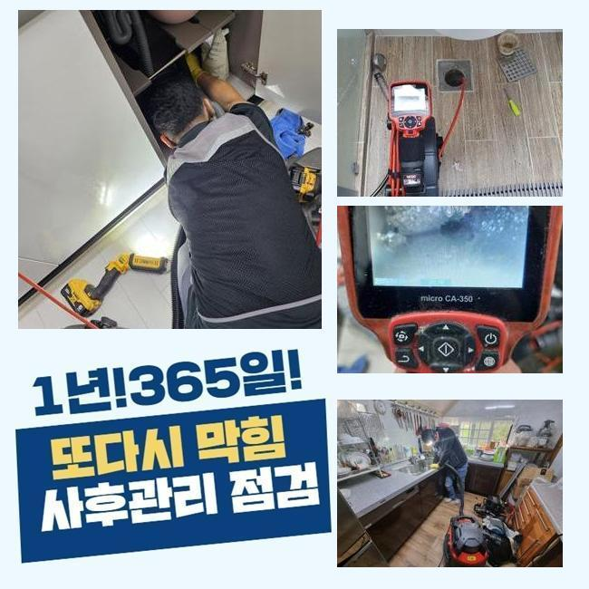
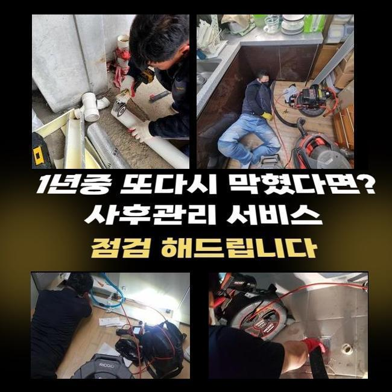
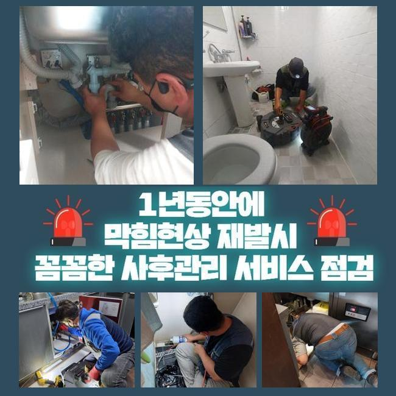
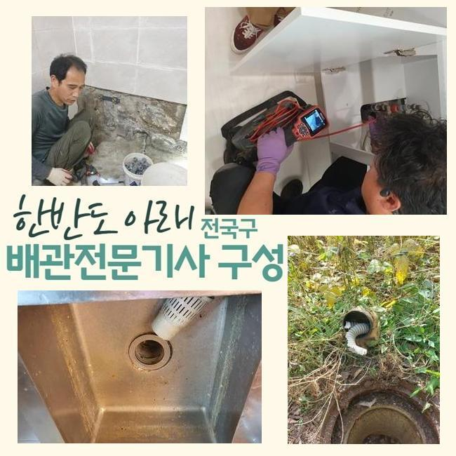
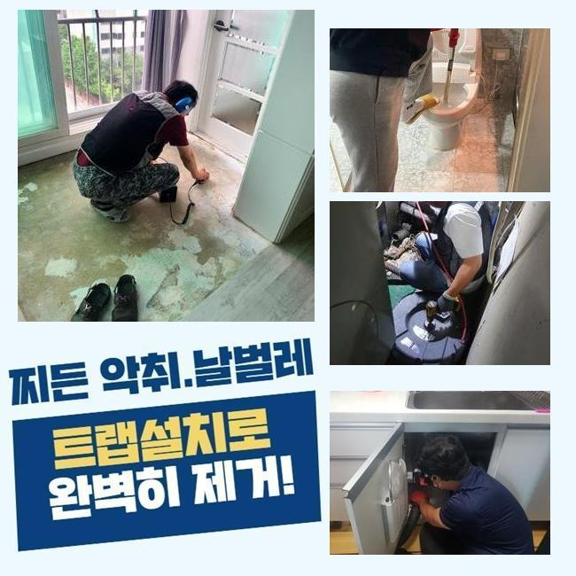

🏠 부천 성곡동변기배관막힘 신흥동 오수맨홀청소 배관막힘
용인 변기막힘 전문 시공 후기

📋 작업 개요
- 위치: 용인
- 서비스 유형: 변기막힘, 하수구막힘, 배관막힘, 맨홀막힘, 역류해결, 배관청소, 고압세척
- 작업 일시: 2024. 12. 7. 16:03
- 업체명: 하수구수사대 (010-5615-2118)
🔍 문제 상황
부천 성곡동변기배관막힘 신흥동 오수맨홀청소 배관막힘
보통 하수라인에 문제가 생긴다면 어떤 해결방법으로 해결할 수 있을까요
일반적으로 하수라인이 막혀 잘 내려가지 않으면 혼자 힘으로 막힌 배관을 쑤셔보거나 인터넷에서 구매한 약품들을 사용하기도 합니다
이런 방법과 약품등은 하수라인의 문제를 수리하기에 옳지 않아요
옷걸이처럼 뾰족하게 생긴 물건들로 하수라인에 속을 긁어파내면 하수관에 상처를 입혀서 하수라인에 금이 가는 등의 문제들로 인해서 하수라인을 새로 바꾸게 되는 경우까지 생길 수도 있어요
그 외에 산성이 강한 약품들도 이상이 생긴 하수시스템을 오히려 악화시키며 사용을 하면 할수록 배수관이 부식되며 새로운 설비로 바꾸는 경우도 생깁니다
개인적인 도구나 산성제품 사용시 매우 조심하셔야해요
이번에 문의주신 고객분도 계속적인 약품의 이용으로 하수관이 손상을 입으면서 물이 내려갈때마다 냄새가 난다고 말씀하셨습니다
마트에서 살 수 있는 약물은 전문적인게 아니여서 근본적으로 문제점을 해결하는게 불가능하고 정확하게 약품에 대한 이해와 기술력이 없는 경우엔 자체적인 효과성을 말씀 드릴 수가 없습니다
독한약을 써서 얼마간은 문제들이 해결이 된듯 싶지만 하수관에 계속적인 손상과 충격으로 더한 상황들이 일어날 수도 있습니다

🔎 원인 분석
💡 전문가 진단: 정밀 진단 장비를 사용하여 슬러지의 고착 여부를 판명하고 타격/세척 작업을 실시했습니다.
이러한 약품을 쓰는 것으로는 석회석 등의 딱딱하게 변형된 물질을 처리하는게 쉽지 않습니다
약물등으로 해결하는 것이 어려운 경우에 배수구가 막히거나 역류하는 경우에 처리하는 방법엔 어떤게 있을까요
배수관이 막혔을때 수리하는 과정을 상세하게 보여드릴게요!
배수관이 막혀서 역류하고 있다는 의뢰를 전달받아 바로 긴급출동 했습니다
막힘문제를 방치하게 되면 연관되는 문제로 이어지면서 악취등이 생기게 되므로 물이 잘 안내려가는 느낌이 들었을때 빠르게 전문가에게 도움을 요청하는게 가장 좋습니다
의뢰인께서 안내해주신 욕실의 하수구를 먼저 알 수 있었습니다
문제가 생긴 배관을 파악했으나 입구를 보는 것만으로는 정확히 알 수 없기때문에 배수구 안쪽 부분을 점검하기로 했어요
다음 작업을 위해서 하수관 내시경장치를 이용했어요
내시경장비를 투입하면 막힘문제의 정확한 원인들을 직접 볼 수 있으므로 문제해결에 맞는 정확한 방법들을 선택할 수 있어요
내시경선을 배관에 집어넣고 모니터 하면서 배관을 막고있는 이물질과 배수구의 형태를 먼저 알 수 있었어요

🔧 작업 과정
모니터를 확인해보니 석회가루와 머리카락등이 하수구를 막고있어 물길이 막힌 모습였습니다
고객분께 석회가루가 섞인 침전물이 하수구 안쪽에 가득하다고 보여드리고 다음 작업내용을 안내해드렸어요
내부에 붙어있는 석회와 침전물을 파쇄하기 위해서 스케일링 작업들을 이어나갔습니다
스케일링작업이란 내벽에 달라붙은 석회 침전물을 파쇄시키는 방식으로 하수라인의 안쪽을 깔끔하게 세척하는 작업입니다
플렉스샤프트기를 사용하여 빠른 속도의 체인블럭이 하수라인의 직경에 맞게 조절되며 불순물을 파쇄하며 배수구를 깨끗하게 복구할수 있었어요
석회질이 쌓이는 이유는 목욕시에 발생하는 작은 오염물질이 굳어진 건데요 시간이 흘러갈수록 소량씩 쌓여서 배수관을 막게 되지요
스케일링과정은 내시경장치를 사용해 배수라인을 모두 놓치는 부분없이 확인해요
막힘정도가 가장 심한 하수관을 장시간 집중적으로 작업해서 막힘상황을 해결 할 수 있었어요
작업을 하는 중간에도 배수관 내부를 체크해가면서 불순물이 조금씩 사라지고 있는것을 확인할수 있었어요
배관에 조금씩 붙어있던 석회질까지 전부 청소했습니다
아주작은 석회덩어리라 할지라도 완벽하게 청소하지 못한다면 나중에 막힘사고를 일으키므로 남는 부분이 없게끔 청소를 진행해요
작게 부순 석회질을 없애기 위해서서 석션기를 이용했어요
석션장비를 사용해 남아있던 침전물까지 전부 제거하고 하수관의 안쪽을 재검했어요
말끔하게 배수구가 청소된걸 체크한 후 물을 채워 한번에 내려보내며 이상이 없는지 최종점검을 했습니다
한번에 가득 채운 물을 내려보내도 문제없이 배수되었고 배수관에 많은 양의 하수가 내려오며 역류하는 일도 일어나지 않았어요
사례자님께 마지막으로 관리방법과 주기적인 청소를 설명하고 작업 현장을 완벽하게 청소했어요


✅ 작업 완료
저희 전문진이 깨끗하게 세척을 진행했으므로 이후에 배수라인을 사용하시면서 사례자님께서도 최대한 이물질이 들어가지 않게끔 신경을 쓰시면서 사용하셔야 합니다
배수관은 지름이 작아서 소량의 이물질도 문제가 될 수 있어요
오늘처럼 비슷한 문제점으로 의뢰인께서도 난감한 상황을 겪고 계시다면 저희 전문 기술진에게 편하게 상담 해주세요
내 일같은 마음으로 해결 해드리겠습니다




⚠️ 하수구 배관 막힘 예방 및 관리 가이드
- ✅ 머리카락, 비닐, 물티슈 등 물에 분해되지 않는 이물질은 하수구 유입을 절대 금지해 주세요.
- ✅ 하수구 거름망을 씌우고 모여진 이물질은 주기적으로 쓰레기통에 바로 비워주셔야 합니다.
- ✅ 배관 노후가 심할 경우 이물질이 더 쉽게 걸리므로 주기적인 배관 세척(고압세척 등)을 권장합니다.
- ✅ 작업 후 1년 이내 재발 시 하수구수사대에서 무상 A/S 보증 서비스를 제공합니다.
💡 핵심 정리
- 확실한 장비 작업(내시경 점검 및 샤프트 스케일링)으로 원인을 뿌리 뽑습니다.
- 작업 후 1년 이내에 동일한 부위 재발 시 100% 무상 A/S 서비스를 보장합니다.
- 서울 · 경기 · 인천 전 지역에 24시간 언제든 긴급 출동할 수 있도록 항시 대기 중입니다.
❓ 자주 묻는 질문 (FAQ)
🚨 용인 변기막힘 문제로 고민이신가요?
정확한 원인 진단과 확실한 시공으로 재발 없는 해결을 약속드립니다.
24시간 긴급 출동 | 서울 · 경기 · 인천 전지역 | 1년 내 재발 시 무상 A/S